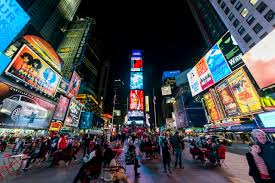

Explore a cidade de Nova Iorque com imagens impressionantes das suas atrações icônicas.
Times Square à noite: O brilho das luzes de neon e as telas publicitárias gigantes transformam Times Square em um espetáculo vibrante e pulsante de cores e energia noturna.